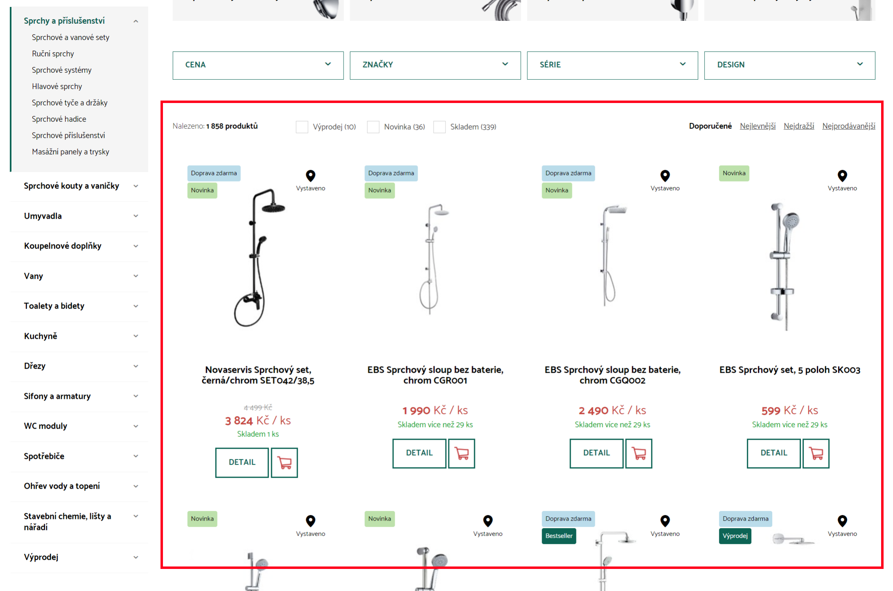

|

Jan @Novoj Novotný
O mně
|
Použití v e-commerce |
Více-úrovňová menu (zobraz hierarchii).

Drobečková navigace (vypiš nadřízené).
Výpis návazných produktů v omezené sekci stromu.
Naivní návrh datové struktury, byť hojně používaný v literatuře.
|
V praxi pracujeme s mnohem rozsáhlejšími daty a proto si pojďme devinovat situaci, která se alespoň velmi vzdáleně podobá reálným případům z praxe.
Ukážeme si reálné SQL dotazy nad Oracle 11g databází.
// zajímají nás kategorie
select TC.* from T_CATEGORY TC
// přes M:N vazbu produktu na kategorii
left join T_PRODUCT_CATEGORY TPC on TC.CATEGORY_ID = TPC.CATEGORY_ID
left join T_PRODUCT TP on TP.PRODUCT_ID = TPC.PRODUCT_ID
// s vyloučením kategorií bez produktů
where TP.PRODUCT_ID is not null
// a hierarchickým dotazem od kategorie s ID = 2 s rekurzí přes podřízené
start with TC.CATEGORY_ID = 2
connect by prior TC.CATEGORY_ID = TC.PARENT;
S přibližným výsledkem:
1000 rows retrieved starting from 1 in 794 ms (execution: 636 ms, fetching: 158 ms)
Zdroj: Oracle tutorial
// zajímají nás kategorie
SELECT t3.* FROM T_CATEGORY t1
// otrocky připojme X podřízených úrovní kategorií
LEFT JOIN T_CATEGORY t2 ON t2.parent = t1.category_id
LEFT JOIN T_CATEGORY t3 ON t3.parent = t2.category_id
// s M:N vazbou produktu na kategorii
LEFT JOIN T_PRODUCT_CATEGORY TPC on t1.CATEGORY_ID = TPC.CATEGORY_ID OR t2.CATEGORY_ID = TPC.CATEGORY_ID OR t3.CATEGORY_ID = TPC.CATEGORY_ID
LEFT JOIN T_PRODUCT TP on TP.PRODUCT_ID = TPC.PRODUCT_ID
// s vyloučením kategorií bez produktů a nastavením úvodní kategorie na ID = 2
where TP.PRODUCT_ID is not null
and t1.CATEGORY_ID = 2
S přibližným výsledkem:
1000 rows retrieved starting from 1 in 1 s 292 ms (execution: 335 ms, fetching: 957 ms)
// zajímají nás kategorie a počet produktů v nich
select TC.*, A.PRODUCT_COUNT from T_CATEGORY TC
inner join (
// zde můžeme získat pouze sloupce, které jsou použité v GROUP by sekci
select t1.CATEGORY_ID, count(0) as PRODUCT_COUNT
from T_CATEGORY t1
// přes M:N vazbu produktu na kategorii
left join T_PRODUCT_CATEGORY TPC on t1.CATEGORY_ID = TPC.CATEGORY_ID
left join T_PRODUCT TP on TP.PRODUCT_ID = TPC.PRODUCT_ID
// s vyloučením kategorií bez produktů a nastavením úvodní kategorie na ID = 2
where TP.PRODUCT_ID is not null
start with t1.CATEGORY_ID = 2
connect by prior t1.CATEGORY_ID = t1.PARENT
// seskupit podle kategorie
group by t1.CATEGORY_ID
having count(0) > 0
) a on a.CATEGORY_ID = TC.CATEGORY_ID
S přibližným výsledkem:
100 rows retrieved starting from 1 in 1 s 34 ms (execution: 958 ms, fetching: 76 ms)
// zajímají nás kategorie
select * from T_CATEGORY TC
// nadřízené kategorii s ID = 4
start with TC.CATEGORY_ID = 4
// s obrácenou rekurzivní vazbou
connect by prior TC.PARENT = TC.CATEGORY_ID;
S přibližným výsledkem:
5 rows retrieved starting from 1 in 63 ms (execution: 6 ms, fetching: 57 ms)
Zdroj: Oracle tutorial
|
|
Ukázka dat |
|
| Výhody | Nevýhody |
|---|---|
|
|
// zajímají nás kategorie
select TC.* from T_CATEGORY TC
// přes M:N vazbu produktu na kategorii
left join T_PRODUCT_CATEGORY TPC on TC.CATEGORY_ID = TPC.CATEGORY_ID
left join T_PRODUCT TP on TP.PRODUCT_ID = TPC.PRODUCT_ID
// s vyloučením kategorií bez produktů
where TP.PRODUCT_ID is not null
// jejichž cesta začíná cestou nadřízené kategorie
and TC.PATH like '/0/1/2/%';
S přibližným výsledkem:
1000 rows retrieved starting from 1 in 211 ms (execution: 43 ms, fetching: 168 ms)
// zajímají nás kategorie a počet produktů v nich
select TC.*, A.PRODUCT_COUNT from T_CATEGORY TC
inner join (
// zde můžeme získat pouze sloupce, které jsou použité v GROUP by sekci
select T_CATEGORY.CATEGORY_ID, count(0) as PRODUCT_COUNT
from T_CATEGORY
// přes M:N vazbu produktu na kategorii
left join T_PRODUCT_CATEGORY TPC on T_CATEGORY.CATEGORY_ID = TPC.CATEGORY_ID
left join T_PRODUCT TP on TP.PRODUCT_ID = TPC.PRODUCT_ID
// jejichž cesta začíná cestou nadřízené kategorie
where TP.PRODUCT_ID is not null
and T_CATEGORY.PATH like '/0/1/2/%'
// seskupit podle kategorie
group by T_CATEGORY.CATEGORY_ID
having count(0) > 0
) a on a.CATEGORY_ID = TC.CATEGORY_ID
S přibližným výsledkem:
100 rows retrieved starting from 1 in 255 ms (execution: 184 ms, fetching: 71 ms)
// zajímají nás kategorie
select * from T_CATEGORY
where CATEGORY_ID in (
// rozděl cestu na jednotlivé fragmenty
select regexp_substr(a.PATH, '[^/]+', 1, level)
from (
// nadřízené kategorii s ID = 4
select concat(PATH, concat('/', concat(CATEGORY_ID, '/'))) as PATH
from T_CATEGORY where CATEGORY_ID = 4
) a
// fragmenty převeď na řádkovou reprezentaci (černá magie)
connect BY regexp_substr(a.PATH, '[^/]+', 1, level) is not null)
// setřídit podle úrovně zanoření sestupně
order by LVL desc;
S přibližným výsledkem:
5 rows retrieved starting from 1 in 133 ms (execution: 91 ms, fetching: 42 ms)
Zdroj: Oracle tutorial
Odlišný pohled na hierarchická data formou do sebe zanořených množin.
 |
→ |  |
U každého uzlu se definují levé a pravé hranice, které jsou větší než levé a pravé hranice všech jejich dětí.

Mapování v následující relační struktuře:
Získej všechny podřízené uzly konkrétního uzlu
select * from MPTT where left >= node.left and right <= node.right
Získej všechny nadřízené uzly konkrétního uzlu
select * from MPTT where left <= node.left and right => node.right
Pro další typy dotazů je vhodné rozšířit MPTT informace o úroveň zanoření a počet dětí.

Získej uzly podřízené konkrétního uzlu do hloubky Y
select * from MPTT
where left >= node.left and
right <= node.right and
level >= node.level and
level <= node.level + Y
Získej uzly nadřízené konkrétnímu uzlu do hloubky Y
select * from MPTT
where left <= node.left and
right => node.right and
level >= node.level and
level <= node.level + Y
Získej všechny podřízené "koncové" uzly konkrétního uzlu
select * from MPTT a
where left <= node.left and
right => node.right and
node.numberOfChildren = 0
Běžné operace se stromem:
// zajímají nás kategorie
select TC.* from T_CATEGORY TC
// přes M:N vazbu produktu na kategorii
left join T_PRODUCT_CATEGORY TPC on TC.CATEGORY_ID = TPC.CATEGORY_ID
left join T_PRODUCT TP on TP.PRODUCT_ID = TPC.PRODUCT_ID
// pouze kategorie jejichž hranice leží uvnitř intevalu
where TC.LEFT > 3 and TC.RIGHT < 1357
// s vyloučením kategorií bez produktů
and TP.PRODUCT_ID is not null;
S přibližným výsledkem:
1000 rows retrieved starting from 1 in 201 ms (execution: 51 ms, fetching: 150 ms)
Pokud de-normalizujeme strukturu tabulek a uložíme hranice blíže k produktu, potom:
// zajímají nás kategorie
select TC.* from T_CATEGORY TC
// s vazbou na produkty
inner join T_PRODUCT TP on TC.LEFT = TP.LEFT and TC.RIGHT = TP.RIGHT
// jejichž hranice leží uvnitř intevalu
where TP.LEFT > 3 and TP.RIGHT < 1357
Poznámka: de-normalizací jsme zároveň porušili M:N vazbu, ale tento příklad je zde pouze pro ilustraci
S přibližným výsledkem:
1000 rows retrieved starting from 1 in 84 ms (execution: 4 ms, fetching: 80 ms)
// zajímají nás kategorie a počet produktů v nich
select TC.*, A.PRODUCT_COUNT from T_CATEGORY TC
inner join (
// zde můžeme získat pouze sloupce, které jsou použité v GROUP by sekci
select T_CATEGORY.CATEGORY_ID, count(0) as PRODUCT_COUNT
from T_CATEGORY
// přes M:N vazbu produktu na kategorii
left join T_PRODUCT_CATEGORY TPC on T_CATEGORY.CATEGORY_ID = TPC.CATEGORY_ID
left join T_PRODUCT TP on TP.PRODUCT_ID = TPC.PRODUCT_ID
// jejichž hranice leží uvnitř intevalu
where T_CATEGORY.LEFT > 3 and T_CATEGORY.RIGHT < 1357
and TP.PRODUCT_ID is not null
// seskupit podle kategorie
group by T_CATEGORY.CATEGORY_ID
having count(0) > 0
) a on a.CATEGORY_ID = TC.CATEGORY_ID
S přibližným výsledkem:
100 rows retrieved starting from 1 in 266 ms (execution: 197 ms, fetching: 69 ms)
Pokud de-normalizujeme strukturu tabulek a uložíme hranice blíže k produktu, potom:
// zajímají nás kategorie a počet produktů v nich
select TC.*, A.PRODUCT_COUNT from T_CATEGORY TC
inner join (
// které se váží na hranice produktů
select left, right, count(0) as PRODUCT_COUNT from T_PRODUCT TP
// jejichž hranice leží uvnitř intevalu
where TP.LEFT > 3 and TP.RIGHT < 1357
// seskupeno dle hranic (pouze ty a počet nás zajímají)
group by left, RIGHT
// sloučeno dle shodných hranic
) a on TC.LEFT = a.LEFT and TC.RIGHT = a.RIGHT
Poznámka: de-normalizací jsme zároveň porušili M:N vazbu, ale tento příklad je zde pouze pro ilustraci
S přibližným výsledkem:
100 rows retrieved starting from 1 in 276 ms (execution: 195 ms, fetching: 81 ms)
// zajímají nás kategorie
select TC.* from T_CATEGORY TC
// jejichž hranice obklopují hranice koncové kategorie
where TC.LEFT <= 5 and TC.RIGHT >= 15
// setřídit podle úrovně zanoření sestupně
order by LVL desc;
S přibližným výsledkem:
5 rows retrieved starting from 1 in 45 ms (execution: 3 ms, fetching: 42 ms)
Zdroj: Oracle tutorial
Měřeno na: Oracle 11g, Intel® Core™ i7-5600U CPU @ 2.60GHz × 4, RAM 32GB, Ubuntu 20.04
Absolutní hodnoty nemají smysl, klíčové v grafu jsou relativní vztahy.
Pokus o odpověď na negativa MPTT algoritmu v oblasti změn ve stromě.
Zavádí ovšem tři nové limitace:
Struktura je zprvu "virtuální" a postupně se zaplňuje reálnými daty:
Level 0 je limitován maximálním rozpětím datového typu Java Long. Tj. reálně např. 10 úrovní při 55 položkách. Toto množství by se dalo teoreticky dále rozšířit přechodem na unsigned long.
PMPTT knihovna je dostupná pod MIT licencí v Maven Central:
<dependency>
<groupId>one.edee.oss</groupId>
<artifactId>lib_pmptt</artifactId>
<version>1.0.0</version>
</dependency>
<dependency>
<groupId>one.edee.oss</groupId>
<artifactId>lib_pmptt_rdbms</artifactId>
<version>1.0.0</version>
</dependency>
Dokumentace a zdrojové kódy jsou dostupné na GitHub:
Použití v kódu:
// create PMPTT instance
final PMPTT pmptt = new PMPTT(new MemoryStorage());
// PMPTT instance can handle several different "hierarchies" - ie. trees
final Hierarchy hierarchy = pmptt.getOrCreateHierarchy("eshopCategories", (short) 10, (short) 51);
// fill up hierarchy with categories
final HierarchyItem tvs = hierarchy.createRootItem("Televize");
final HierarchyItem washingMachines = hierarchy.createRootItem("Pračky");
final HierarchyItem cellPhones = hierarchy.createRootItem("Mobily");
final HierarchyItem lcd = hierarchy.createItem("LCD", tvs.getCode());
// bounds are automatically computed and accessible for attaching to de-normalized structures
final Long leftBound = tvs.getLeftBound();
final Long rightBound = tvs.getRightBound();
// all hierarchy modification operations are baked in
hierarchy.removeItem(cellPhones.getCode());
hierarchy.moveItemBetweenLevelsFirst(washingMachines.getCode(), tvs.getCode());
// you can list categories top-bottom
final List<HierarchyItem> childrens = hierarchy.getChildItems(tvs.getCode());
final List<HierarchyItem> leafs = hierarchy.getLeafItems(tvs.getCode());
// or bottom up
final List<HierarchyItem> parents = hierarchy.getParentItems(lcd.getCode());